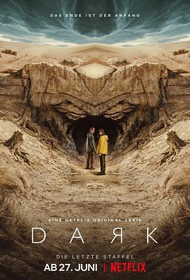

暗黑 第三季 / Dark Season 3
又名：暗(港/台)
感觉三部得连起来看，不然脑子会炸会懵逼。大团圆结局很满意，脑洞很满意，时间跳来跳去本可以展现得更好
作品信息
| 导演 | 巴伦·博·欧达尔 |
| 编剧 | 巴伦·博·欧达尔 / 扬特耶·弗里泽 |
| 主演 | 路易斯·霍夫曼 / 卡罗莉内·艾希霍恩 / 玛雅·舍内 / 丽莎·维卡里 / 耶迪斯·特里贝尔 / 斯蒂芬·坎普沃斯 / 安德烈亚斯·皮特斯柯曼 / 莫里茨·杰恩 / 保罗·勒克斯 / 奥利弗·马苏奇 / 克里斯蒂安·哈切森 / 吉娜·斯蒂比茨 / 黛博拉·考夫曼 / 卡洛塔·凡·法尔肯海因 / 克里斯蒂安·斯泰尔 / 芭芭拉·纽塞 / 马克·瓦斯科 / 妮娜·克龙耶格尔 / 桑德拉·伯格曼 / 达恩·伦纳德·利布伦茨 / 沃尔夫拉姆·科赫 / 卡莉娜·N.维斯 / 迪特里希·霍林德布穆尔 / 艾拉·李 / 安妮·拉特-波利 / 马西米兰·迪尔 / 塞巴斯蒂安·鲁道夫 / 莱娜·乌泽多夫斯基 / 克里斯蒂安·佩措尔德 / 马克斯·施梅尔普芬尼希 |
| 类型 | 科幻 / 悬疑 |
| 制片国家/地区 | 德国 |
| 语言 | 德语 |
| 首播 | 2020-06-27(德国) |
| 季数 | 3 |
| 集数 | 8 |
| 单集片长 | 60分钟 |
| IMDb | tt10414808 |
说过什么
2020-07-21 19:29:44
广播 · 看过
感觉三部得连起来看，不然脑子会炸会懵逼。大团圆结局很满意，脑洞很满意，时间跳来跳去本可以展现得更好
2020-07-01 16:33:55
广播 · 在看
最后一次看到是 2026-08-01T11:05:33+10:00 · 豆瓣原页